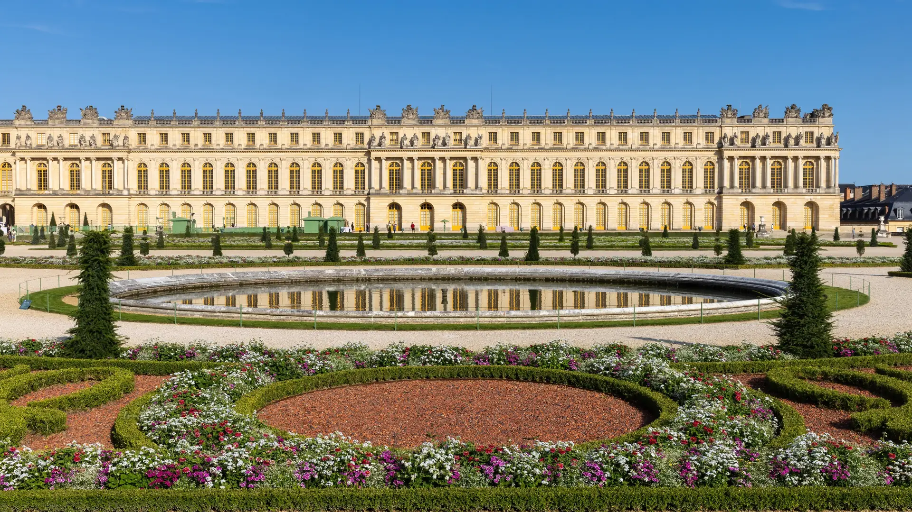
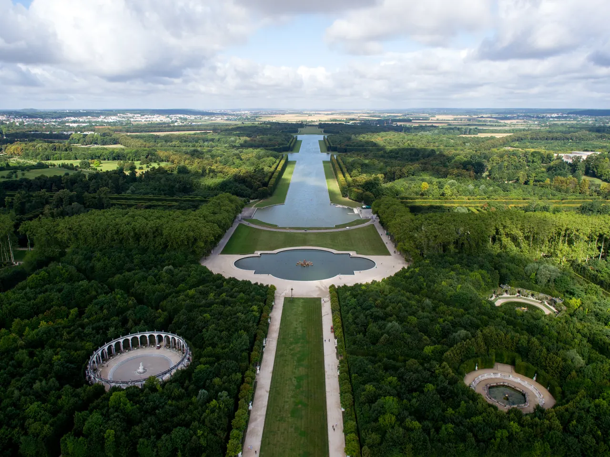
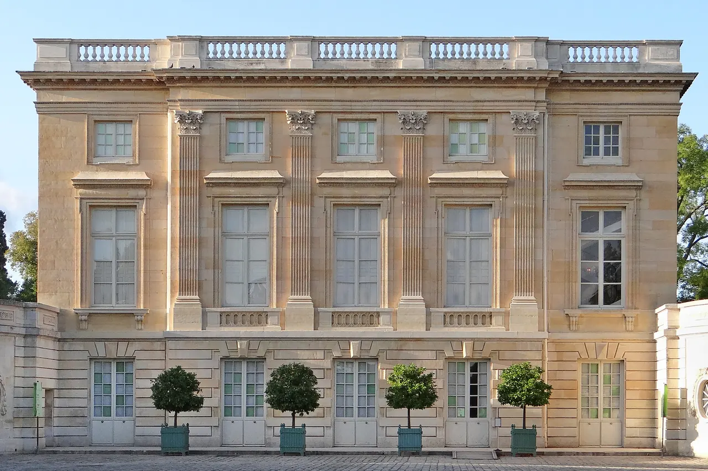

{kind=link}
{kind=link}
{kind=link}
관광·미술관
Nous avons déjà des billets.
이미 표가 있습니다.
누 자봉 데자 데 비예

파리 남서쪽 20km 지점에 위치한 17~18세기 프랑스 절대왕정의 정치적 심장이자 유럽 궁전 건축의 최고봉(유네스코 세계유산)이다.
루이 13세의 소박한 사냥용 별장이었던 늪지대를 '태양왕' 루이 14세가 1661년부터 당대 최고의 건축가 루이 르보, 실내 장식가 샤를 르브룅, 조경가 앙드레 르노트르를 총동원하여 2만 명의 귀족과 관료를 수용하는 거대한 황금 궁전 도시로 탈바꿈시켰다.
길이 73m에 걸쳐 357개의 거울과 샹들리에가 눈부시게 반사되는 '거울의 방(Galerie des Glaces)', 바로크 기하학 조경의 극치인 800ha 대정원(Grandes Eaux), 그리고 루이 15세와 마리 앙투아네트가 궁정의 엄격한 예법을 벗어나 전원생활을 꿈꾸었던 트리아농 궁전(Grand & Petit Trianon)과 동화 같은 '왕비의 촌락(Hameau de la Reine)'이 펼쳐진다.
"단순한 화려함을 넘어, 왕의 권력이 어떻게 자연과 공간을 완벽하게 통제하고 지배했는지를 증명하는 장엄한 무대다." 아침 첫 시간 슬롯으로 본궁(거울의 방)을 관람한 뒤, 르노트르의 대정원 분수를 지나 트리아농 궁전과 마리 앙투아네트의 촌락까지 산책하는 4~5시간 당일치기 코스를 추천한다.
| 운영시간 | 궁전 09:00–18:30 · 트리아농 영지 12:00–18:30 · 정원·공원 07:00–20:30 |
|---|---|
| 휴무 | 궁전·트리아농 월요일 휴관 / 정원·공원은 연중무휴 (12/25·1/1·5/1 전체 휴관) |
| 요금 | Passport 고시즌 €35 · 트리아농 €15 · 분수쇼일 정원 €15 (2026-01-14 개정) |
| 예약 | 공식 온라인 사전 구매 권장 · 성수기 시간지정 예약 권장 |
| 항목 | 상세 정보 |
|---|---|
| 위치 | Place d'Armes, 78000 Versailles |
| 운영 시간 | 화요일–일요일 09:00–18:30 (대정원 08:00–20:30, 트리아농 12:00–18:30) / 매주 월요일 휴관 |
| 입장료 | 통합권(Passport) €24.00~€32.00 (본궁+정원+트리아농 전 구역 포함, 분수 쇼 날짜 변동) / 18세 미만 무료 |
| 사전 온라인 예매 (필수) | 공식 웹사이트(chateauversailles.fr)에서 입장 시간 지정 필수 (뮤지엄 패스 소지자도 무료 시간 슬롯 예약 필수) |
| 철도 접근 (강력 권장) | RER C선 Versailles Château Rive Gauche역 하차 후 궁전 정문까지 도보 10분 직결 (파리 시내에서 약 45분) |


Nous avons déjà des billets.
이미 표가 있습니다.
누 자봉 데자 데 비예
On peut prendre des photos ?
사진 찍어도 되나요?
옹 푀 프랑드르 데 포토
Où commence la visite ?
관람은 어디서 시작하나요?
우 코망스 라 비지트

1868년 앙리 라브루스트가 주철 기둥과 9개 도자기 돔으로 완성한 19세기 건축의 걸작 '라브루스트 열람실'과 일반에 전면 무료 개방된 거대한 타원형 '오발 열람실(Salle Ovale)', 프랑스 국립도서관 박물관.

18세기 원형 곡물거래소를 세계적인 건축가 안도 다다오가 노출 콘크리트 원통 실린더로 리노베이션한 현대미술관. 프랑수아 피노 회장의 세계적 현대미술 컬렉션과 1889년 돔 천장 무역 파노라마 프레스코화.

렌조 피아노와 리처드 로저스가 건물 배관과 골격을 외벽으로 노출시킨 20세기 하이테크 건축의 전설이자 유럽 최대 근현대미술관. ⚠ 2025년 가을부터 2030년까지 전면 개보수 공사로 본관 폐관 중.

클로드 모네가 43년간 직접 꽃과 연못을 가꾸며 불후의 『수련』 대작을 창조해낸 살아있는 인상파 캔버스. 초록색 일본식 다리가 걸린 '물의 정원(Jardin d'eau)'과 핑크빛 모네 생가 아틀리에.

1900년 파리 만국박람회를 위해 건립된 45m 높이 아르누보 철골 유리 네이브(Nave)의 기념비적 국립 전시장. 2024 파리 올림픽을 거쳐 리노베이션 완료 후 재개관한 파리 문화 예술의 중심지.

중세 소르본 대학 교수와 학생들이 공용어로 라틴어를 쓰던 데서 유래한 800년 파리 지성의 요람이자 센 강 좌안(Rive Gauche)의 심장. 프랑스 위인들의 성소 팡테옹(Panthéon), 셰익스피어 앤 컴퍼니, 뤽상부르 공원.